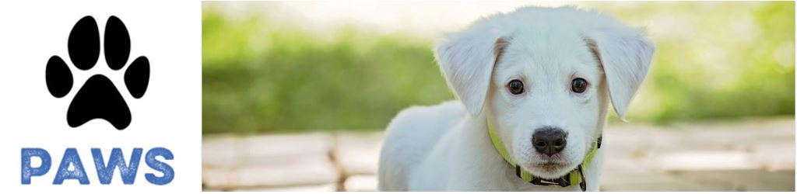
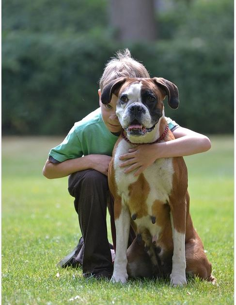

Adopt a Pet
How to care for a pet
When caring for a pet it’s important to know how much work and commitment is involved. Your pet will need a clean and warm environment that they feel safe to be in. You need to provide them with a healthy diet and regular exercise depending on your which pet you adopt. It’s essential your make your pet feel loved and apart of your family and give them plenty of attention. Your pet will also need be taken to the vet on a regular basis.
Costs

If you are wanting to adopt, the pets have all had their vaccinations, have been wormed, de-sexed, micro chipped and are all healthy. They are great value for money and you can give these pets a second chance at life.
Dogs and puppies = $200
Cats and kittens = $100
Rabbits and guinea pigs = $50
Birds = $20